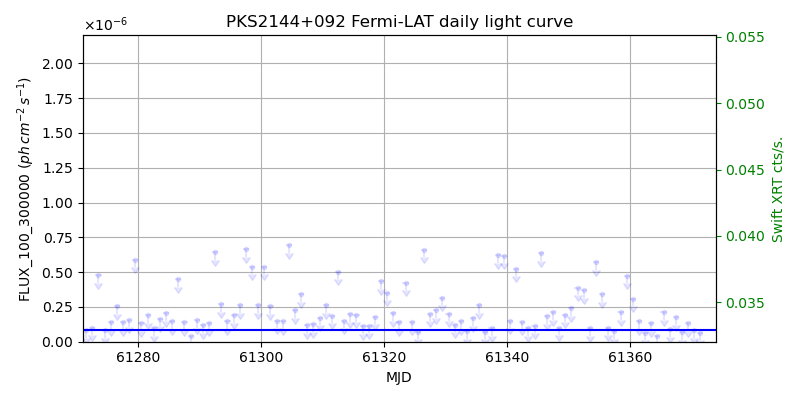
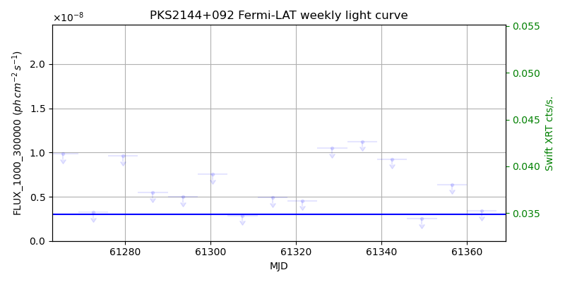

LAT Lightcurve site: https://fermi.gsfc.nasa.gov/ssc/data/access/lat/msl_lc/source/PKS_2144p092
Swift site: https://www.swift.psu.edu/monitoring/source.php?source=PKS2144+092
NED: Query
Time of last update of this page: UT: 2026-11-20 16:29 (MJD: 61364.687)
| Property | Value |
|---|---|
| R.A. | 21:47:10.08 |
| Dec. | 9:29:45.6 |
| z | 1.113 |
| 3FGL SpectrumType | LogParabola |
| 3FGL PL Index | |
| 3FGL Flux_100_300000 | 8.37e-08 1 / (s cm2) |
| 3FGL Flux_1000_300000 | 3.03e-09 1 / (s cm2) |
| 3FGL Flux >200 GeV | 1.45e-13 1 / (s cm2) |
| 3FGL Extrap. Crab >200 GeV | 0.00 |
| 3FGL Flux After EBL Absorption >200GeV | 1.90e-15 1 / (s cm2) |
| 3FGL EBL Crab Fraction >200GeV | 0.00 |

| MJD | dMJD | Flux | dFlux | Frac3FGL | FracCrab>200GeV | EBLFracCrab>200GeV |
|---|---|---|---|---|---|---|
| 61359.50 | 0.50 | 4.73e-07 | 0.00e+00 | 0.00 | 0.00 | 0.00 |
| 61360.50 | 0.50 | 3.09e-07 | 0.00e+00 | 0.00 | 0.00 | 0.00 |
| 61361.50 | 0.50 | 1.45e-07 | 0.00e+00 | 0.00 | 0.00 | 0.00 |
| 61362.50 | 0.50 | 6.57e-08 | 0.00e+00 | 0.00 | 0.00 | 0.00 |
| 61363.50 | 0.50 | 1.32e-07 | 0.00e+00 | 0.00 | 0.00 | 0.00 |
| MJD | dMJD | Flux | dFlux | Frac3FGL | FracCrab>200GeV | EBLFracCrab>200GeV |
|---|---|---|---|---|---|---|
| 61328.50 | 3.50 | 6.62e-08 | 0.00e+00 | 0.00 | 0.00 | 0.00 |
| 61335.50 | 3.50 | 6.99e-08 | 0.00e+00 | 0.00 | 0.00 | 0.00 |
| 61342.50 | 3.50 | 1.79e-07 | 0.00e+00 | 0.00 | 0.00 | 0.00 |
| 61349.50 | 3.50 | 5.67e-08 | 0.00e+00 | 0.00 | 0.00 | 0.00 |
| 61356.50 | 3.50 | 3.35e-08 | 0.00e+00 | 0.00 | 0.00 | 0.00 |

| MJD | dMJD | Flux | dFlux | Frac3FGL | FracCrab>200GeV | EBLFracCrab>200GeV |
|---|---|---|---|---|---|---|
| 61359.50 | 0.50 | 1.83e-08 | 0.00e+00 | 0.00 | 0.00 | 0.00 |
| 61360.50 | 0.50 | 1.76e-08 | 0.00e+00 | 0.00 | 0.00 | 0.00 |
| 61361.50 | 0.50 | 1.75e-08 | 0.00e+00 | 0.00 | 0.00 | 0.00 |
| 61362.50 | 0.50 | 1.72e-08 | 0.00e+00 | 0.00 | 0.00 | 0.00 |
| 61363.50 | 0.50 | 1.34e-08 | 0.00e+00 | 0.00 | 0.00 | 0.00 |

| MJD | dMJD | Flux | dFlux | Frac3FGL | FracCrab>200GeV | EBLFracCrab>200GeV |
|---|---|---|---|---|---|---|
| 61328.50 | 3.50 | 1.05e-08 | 0.00e+00 | 0.00 | 0.00 | 0.00 |
| 61335.50 | 3.50 | 1.12e-08 | 0.00e+00 | 0.00 | 0.00 | 0.00 |
| 61342.50 | 3.50 | 9.24e-09 | 0.00e+00 | 0.00 | 0.00 | 0.00 |
| 61349.50 | 3.50 | 2.54e-09 | 0.00e+00 | 0.00 | 0.00 | 0.00 |
| 61356.50 | 3.50 | 6.37e-09 | 0.00e+00 | 0.00 | 0.00 | 0.00 |
--------------------------------------------------------- Using user-supplied coords: 21:47:10.08 9:29:45.6 2000 --------------------------------------------------------- FLWO UT night of: 2026-11-21 Local Sid. @ Midnight: 03:37 Sunset (-15.0) (local, UT): 18:33 01:33 Sunrise (-15.0) (local, UT): 05:47 12:47 Moonrise (local, UT): Moonset (local, UT): 03:40 10:40 Moon phase: 0.85 --------------------------------------------------------- AzTime LSID UT Obj_el Obj_az Mn_el Mn_az Sep. --------------------------------------------------------- 18:33 22:09 01:33 67.4 193.3 47.9 117.4 41.7 19:03 22:39 02:03 65.0 210.8 53.3 125.0 41.8 19:33 23:09 02:33 61.1 224.7 58.2 134.7 42.0 20:03 23:39 03:03 56.2 235.4 62.3 146.9 42.1 20:33 00:09 03:33 50.7 243.7 65.1 162.1 42.2 21:03 00:39 04:03 44.8 250.4 66.3 179.7 42.4 21:33 01:09 04:33 38.6 256.0 65.4 197.5 42.5 22:03 01:39 05:03 32.4 260.9 62.9 213.2 42.6 22:33 02:09 05:33 26.0 265.3 59.0 225.9 42.8 23:03 02:39 06:03 19.6 269.4 54.2 235.9 42.9 23:33 03:09 06:33 13.3 273.3 48.9 243.9 43.1 00:03 03:39 07:03 7.0 277.1 43.2 250.4 43.3 00:33 04:10 07:33 0.9 281.0 37.3 255.9 43.4 01:03 04:40 08:03 -5.5 285.0 31.2 260.7 43.6 01:33 05:10 08:33 -11.8 289.3 25.1 265.1 43.8 02:03 05:40 09:03 -17.8 293.8 19.0 269.2 44.0 02:33 06:10 09:33 -23.5 298.9 12.9 273.0 44.2 03:03 06:40 10:03 -29.0 304.5 6.8 276.9 44.5 03:33 07:10 10:33 -34.0 310.8 1.0 280.7 44.7 04:03 07:40 11:03 -38.6 318.1 -4.9 284.7 45.0 04:33 08:10 11:33 -42.5 326.4 -11.1 288.8 45.3 05:03 08:40 12:03 -45.6 335.8 -16.8 293.2 45.6 05:33 09:10 12:33 -47.7 346.1 -22.3 298.1 45.9 05:47 09:25 12:47 -48.3 351.4 -24.8 300.5 46.0 --------------------------------------------------------- Dark hours >55 deg.: 0.00